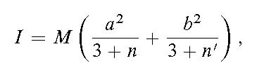
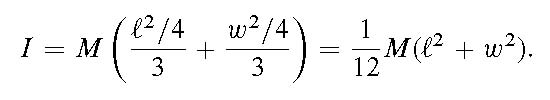

DAVID G. SIMPSON
Nanopedia
| Home |
| Blog |
| Personal |
| Professional |
| Software |
| Photos |
| Reference |
| Nanopedia |
| Wiki |
| Contact Me |
| NASA Site |
| PGCC Site |
| SCHS Site |
| Esperanto |
| Moon Rocks |
| S-M Comics |
| Mouse Site |
| Art Gallery |
LEES' RULE
Lees' rule is a formula for computing the moment of inertia of a symmetrical solid. It is really a kind of mnemonic device for helping to recall several moment of inertia formulae. Lees' rule states that the moment of inertia I of a body of mass M about an axis is given by[1] where a and b are the lengths of the semi-axes perpendicular to the rotation axis, and n and n' are the "numbers of principal curvature" that terminate semi-axes a and b, respectively (n, n' = 0 for a flat surface, 1 for a cylindrical surface, or 2 for a spherical surface).
Example
For example, suppose we want to find the the moment of inertia of a rectangular plate of dimensions ℓ × w, about an axis through the center of the plate and perpendicular to the plane of the plate. Then a = ℓ/2, b = w/2, and n = n' = 0 because the surfaces are flat. Then Lees' rule gives See Also
References
[1] H.J. Gray and A. Isaacs (eds.). A New Dictionary of Physics. Longman, London, 1975.Contact Information
I may be contacted at: